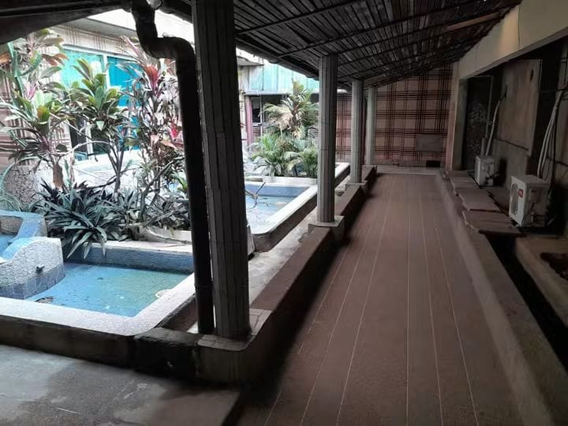
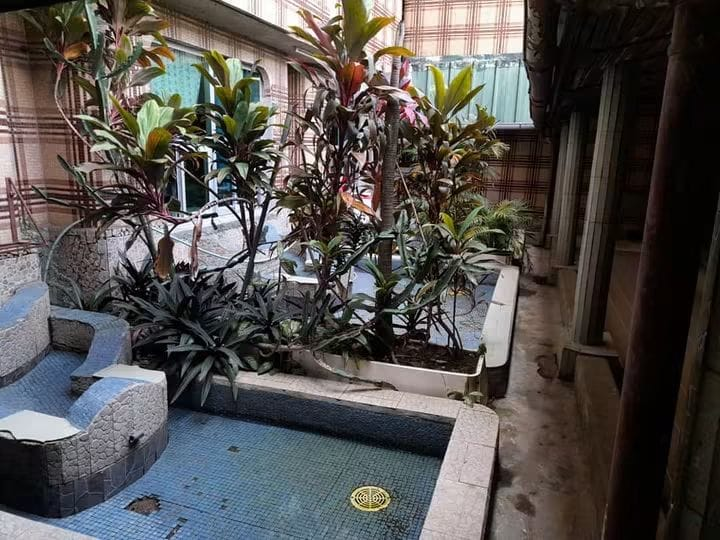

Plonger
La piscine
Le rendez-vous des après-midi ensoleillés, entre deux réunions ou en famille le week-end.
Hôtel ★★★ · Yopougon, Abidjan
Une oasis au cœur de Yopougon, depuis 1984.
Touchez l'eau
Le patio
Bassins de mosaïque, crotons et cordylines : au centre de l'hôtel, un patio tropical garde la fraîcheur, à l'abri de l'agitation de Yopougon.


Les espaces
Le rendez-vous des après-midi ensoleillés, entre deux réunions ou en famille le week-end.
Une table pour les résidents comme pour les visiteurs, du déjeuner au dîner.
Pour prolonger la soirée, au calme, dans un cadre qui a vu passer quatre décennies d'Abidjan.
Mariages, baptêmes, réunions et conférences, de 100 à 350 places.
Deux nouveaux espaces en construction pour écrire la suite de l'histoire.
Salles de cérémonie
Quatre salles pour les mariages, baptêmes, réunions et conférences.
Mariages · Baptêmes · Réunions · Conférences
Séjours
Planche de direction artistique
Le hero est un bassin vivant : un shader WebGL recrée la mosaïque bleue du patio sous une eau traversée de caustiques. Chaque geste du visiteur (souris ou doigt) crée des ondes à la surface. Des feuillages tropicaux ondulent au premier plan puis s'écartent au scroll, comme si l'on entrait dans le patio. Ensuite, les espaces défilent à l'horizontale.